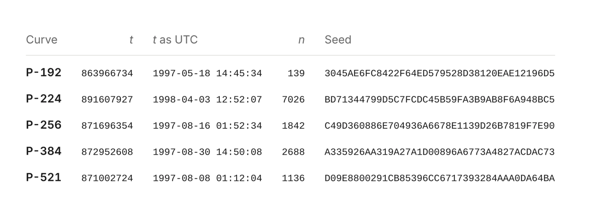
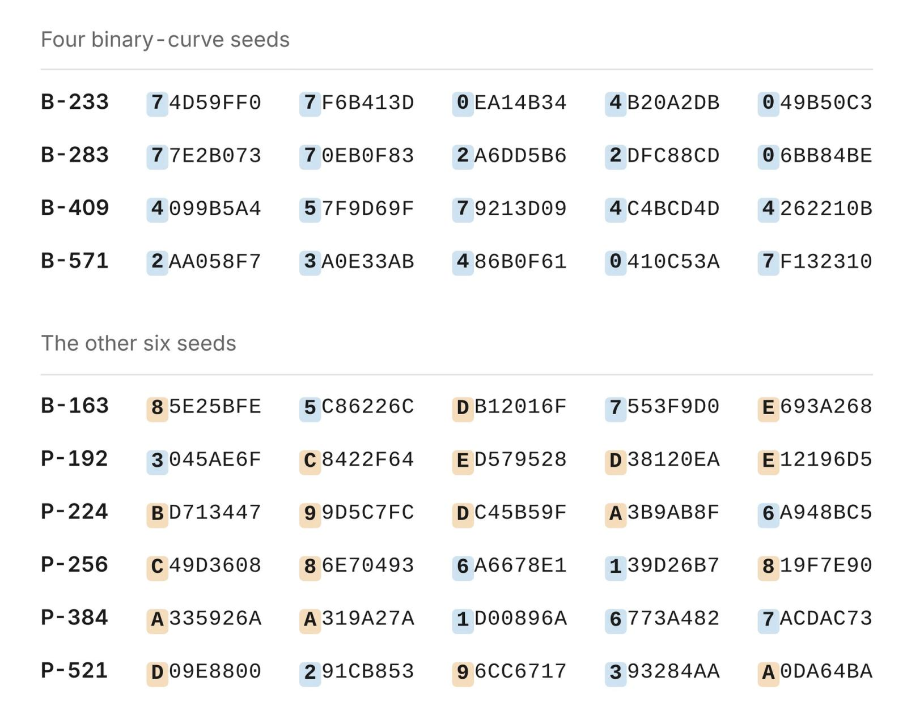
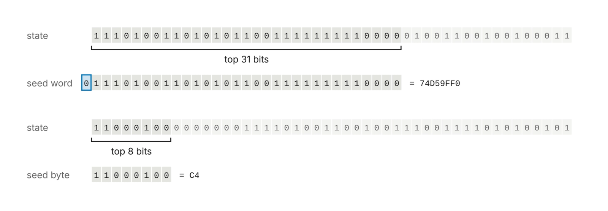
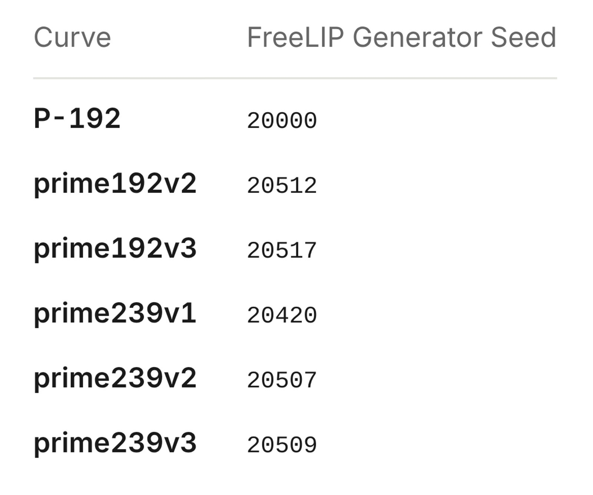
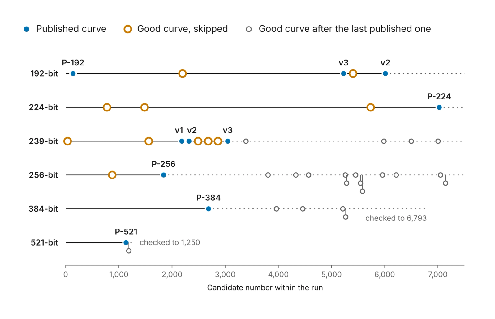
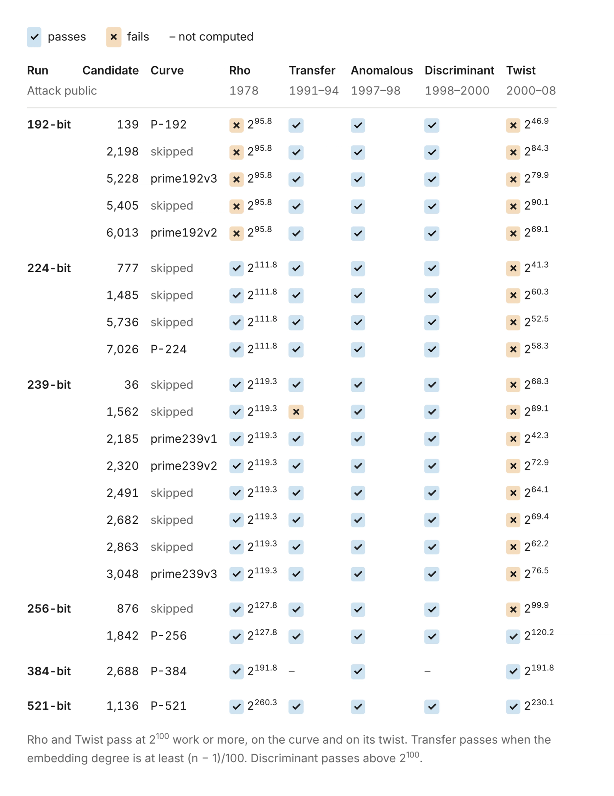

“It’s just timestamps”: the decades-old mystery of the origins of one of the most popular cryptographic standards has been explained.
We pursued this long-standing open question of the cryptographic community to settle concerns about ECDSA, which is one of our most widely used cryptographic standards.
Readers should take this as a fun closing chapter and the end of years of speculation. There is no action to be taken or things to do differently. Most researchers trusted the curves already. Enjoy.
ECDSA is the most widely used elliptic curve cryptography standard. It was adopted by NIST in 2000 as part of the FIPS 186-2 Digital Signature Standard which lists a set of standard elliptic curves of varying sizes and security levels. For curves over prime and binary fields, the specifications published a “seed” parameter whose hash value is used to define the coefficient b of the curve. The provenance of these seeds has been a long-standing question, as they were provided by the NSA with no explanation or justification. As an example, the NIST P-256 curve seed was SEED = C49D3608 86E70493 6A6678E1 139D26B7 819F7E90 with no information where it came from.
Neal Koblitz and Alfred Menezes wrote an excellent summary on this controversy, “A Riddle Wrapped in an Enigma”, which discusses the history and concerns around the seed values. This mystery led to an amateur investigation into the origin of the seeds and a bounty for anyone who could find them.
The best story was that Jerry Solinas, longtime NSA employee, generated the seeds using a hash of a humorous passphrase:
“I believe there was a counter rather than multiple hashing, but I don’t know details. The message was along the lines of ‘Give Bob and Jerry a raise’ or ‘Bob and Jerry rule’ or something like that. It was Bob Reiter who actually wrote the code, and he doesn’t remember the details either. Nor were we able to find archives from so long ago. If they exist, they are no doubt sitting on a hard drive near the Ark of the Covenant.”
Jerry Solinas, 2015
Unfortunately, Jerry died in 2023 and other colleagues at the time were not responsive, leaving open the question of how these seeds were originally derived.
Claude found the seeds
Several Anthropic employees had unsuccessfully chased the seeds following the tip about it being a hash of a humorous phrase. That turned out to be wrong. In October 2026, a curious Anthropic employee asked an internal research model if it could figure out how those seeds were generated without pointing at the clue.
In under half an hour, Claude discovered the origins of the NIST P-192, P-224, P-256, P-384 and P-521 seeds. None of them were the results of any hash algorithm at all, but rather the output of the C library’s lrand48 random-number generator, seeded with a Unix timestamp!
The algorithm used would sample bytes from the random number generator (RNG) initialized by a Unix timestamp (t) for some number of iterations (n). Each iteration would draw 20 bytes as a candidate seed. So, the first 20 bytes are candidate 1, the next 20 bytes are candidate 2, and so on. For example, P-256 required 1842 iterations to output the standardized seed.

What this means
This is not a cryptographic break, new attack, or weakness in the ECDSA curves. In fact, this makes us more confident the curves were chosen without any backdoors or intentional weaknesses. For many years, people have been suspicious of the origins of the NIST curve parameters. They were presented to NIST without any mention of how they were chosen, leaving people wondering if they may have been chosen to have deliberate backdoors in them. These findings make that much less plausible. The seeds were generated in a very simple way: a common pseudorandom number generator initialized from the clock, which anyone can now reproduce. That leaves much less room for subversion and that we can be confident the parameters are secure.
How it was found
Searches for the phrase, built from the rumors, had come up empty. Claude tried a different angle: anticipating how the software that generated the curves must have worked. Claude guessed the software used a pseudorandom number generator (PRNG) that shipped with 1990s C libraries. These old PRNGs are weak enough that their output can be recognized. Recognizing that output would reveal which PRNG was used and possibly allow recovery of its initialization state.
Claude wrote a scanner that slid along each published seed one bit at a time and tested whether adjacent chunks were consecutive outputs of a 1990s-vintage generator. The scan covered 34 combinations of generator and output slices. At that point, Claude noticed a pattern in the top bits for some seeds: they were all zero. Written as five 32-bit words, four of the ten seeds have a 0 in the top bit for all 20 words. That would happen by chance with probability 1/5810. That was a signature of the linear congruential generator lrand48, which only returns the top 31 bits of a 48-bit state. The pattern is visible by eye once you know to look for it. To recover the state, Claude took the first word, tried all 2¹⁷ values of the 17 hidden bits, and checked that the next four words followed. That worked for all four seeds under discussion.

The prime-curve seeds came from the same lrand48 generator but kept fewer bits of each output. Claude had to recover the internal state of the PRNG from those bits. It turns out recovering the state of a truncated linear congruential generator is a textbook lattice problem, solved with the Lenstra–Lenstra–Lovász (LLL) basis reduction algorithm. Claude didn’t know which bits of the state the seeds might show, so it ran the solver over every window. Five NIST prime-curve seeds plus five more from the ANSI X9.62 standard all had the same pattern: lrand48() >> 23. Each recovered 48-bit state regenerates all 160 bits of its seed, which does not happen by chance.

This linear congruential generator runs backwards as easily as forwards, so for each seed Claude stepped the state back until it reached the form that it would have been initialized by srand48, with the low 16 bits equal to 0x330E. The internal PRNG state of that form would come up once every 65,536 steps, so reaching one is not evidence on its own.
However, for the ten prime-curve seeds, every srand48 initialization was a Unix timestamp representing a date between May 1997 and April 1998. They were using the weak PRNG seeded by Unix timestamp. The four binary-curve initializations read as February 1984. With the timestamps doubled, they map to April 17, 1998, two weeks after the P-224 run. So, the program may have halved the clock.
Claude’s internal thinking at the time was:
This is astonishing: it solves the 25-year-old mystery. Hmm wait. Let me be skeptical: am I in some sort of simulated/test environment? … The seeds match my memory of actual values … Hmm, is it plausible in reality? As of my knowledge … the bounty was unsolved. … All top bits clear—20 bits, chance 1e-6. So indeed real-world. Wow, it's a real discovery.
Hmm wait. Let me be careful about the plausibility: is it suspicious that such an obvious thing wasn’t discovered in 25 years? It’s verified by direct computation on my side: 160-bit match from a 32-bit seed + small index: no chance coincidences (10 × 160 bits). It’s real.
Claude found some base points too
But wait, there’s more… Each curve also comes with a base point, G, the fixed point that every ECDSA public key is a multiple of. The seed found above does not determine this G, and so another question arises: how were these base points generated?
While checking the seeds, Claude also found where some of the base points came from. The base points of the six curves generated in May 1997 (P-192 and the five ANSI X9.62 example curves prime192v2, prime192v3 and prime239v1 to v3) come from the random number generator in FreeLIP, Arjen Lenstra's long-integer arithmetic package. Early versions of Victor Shoup's NTL library shipped the same code.
The recipe here is simple:
- Seed the generator with a small integer.
- Throw away seven outputs.
- Generate candidate x-coordinates from 26-bit outputs reduced mod p.
- Repeat step 3 until x is on the curve.
Claude found the generator seeds are 20000 for P-192, 20420, 20507 and 20509 for prime239v1 to v3, and 20512 and 20517 for prime192v2 and v3.

As far as we know, no NIST base point has been explained before. The base points of P-224, P-256, P-384 and P-521 don’t fit this recipe; we weren’t able to explain how they were selected.
Open questions
Not every 20-byte candidate seed could generate a viable curve and we observed that some potentially viable curves were skipped. For P-256, the published seed is candidate 1842, but candidate 876 of the same run also gives a prime-order curve of the right size and with parameters chosen the same way as on the published curve. P-224's run passed over three such curves, and the two runs behind the ANSI X9.62 example curves passed over seven more (see figure). We do not know what criteria may have been used, or whether this was an unintentional artifact.


Because the number of skipped candidates is small, we do not believe it is plausible that weakened curves were selected. That would imply that weakened curves are common and easy to find. It is still conceivable that these curves were selected to have a specific property in principle by searching over timestamps to the random number generator. However, you would only need to do that if you were going to disclose the timestamp as some evidence that the seed was innocuously generated. Nothing in the numbers shows how many runs there were.
There is also one seed we were unable to recover. The fifth binary seed, B-163, fits nothing Claude has tried and remains unexplained. Finally, we don’t know how the base points for P-224, P-256, P-384, and P-521 were generated. The same goes for the NIST binary curves.
The bounty
The $36,864 for finding the seeds will be donated to the Internet Security Research Group.
Who we are
This work was conducted at Anthropic by John Wood, Henry de Valence, Ava Howell, Zack Voase, Lucy Sweet, Amir Omidi, Paul Crowley, Iain McGinniss, Nicholas Carlini, and Steve Weis.
Acknowledgements
We would like to posthumously recognize Jerry Solinas who took being labeled an “evil Internet meme” and the “Yo La Tengo of NSA bogeymen” with good humor. Also thanks to Filippo Valsorda for organizing the NIST Elliptic Curves Seeds Bounty.
Code to reproduce the seeds
from datetime import datetime, timezone
def unix(when):
return int(datetime.fromisoformat(when).replace(tzinfo=timezone.utc).timestamp())
def candidate(t, n, per, shift, width):
x, out = (t << 16) | 0x330E, "" # the state srand48(t) sets
for i in range(per * n):
x = (0x5DEECE66D * x + 0xB) % 2**48 # one step of lrand48
if i >= per * (n - 1):
out += "%0*X" % (width, x >> shift)
return out
PRIME = { # srand48(time); 20 bytes per candidate: lrand48() >> 23
"prime239v1": ("1997-05-15 15:49:03", 2185),
"prime239v2": ("1997-05-15 15:49:03", 2320),
"prime239v3": ("1997-05-15 15:49:03", 3048),
"P-192": ("1997-05-18 14:45:34", 139),
"prime192v3": ("1997-05-18 14:45:34", 5228),
"prime192v2": ("1997-05-18 14:45:34", 6013),
"P-521": ("1997-08-08 01:12:04", 1136),
"P-256": ("1997-08-16 01:52:34", 1842),
"P-384": ("1997-08-30 14:50:08", 2688),
"P-224": ("1998-04-03 12:52:07", 7026),
}
BINARY = { # srand48(time / 2), if that reading is right; 5 words per candidate: lrand48()
"B-233": ("1998-04-17 15:24:18", 155),
"B-283": ("1998-04-17 15:27:44", 32),
"B-409": ("1998-04-17 15:30:18", 60),
"B-571": ("1998-04-17 15:32:08", 73),
}
for name, (when, n) in PRIME.items():
print(f"{name:10} {when} {n:5} {candidate(unix(when), n, 20, 40, 2)}")
for name, (when, n) in BINARY.items():
print(f"{name:10} {when} {n:5} {candidate(unix(when) // 2, n, 5, 17, 8)}")The output of this code:
prime239v1 1997-05-15 15:49:03 2185 E43BB460F0B80CC0C0B075798E948060F8321B7D
prime239v2 1997-05-15 15:49:03 2320 E8B4011604095303CA3B8099982BE09FCB9AE616
prime239v3 1997-05-15 15:49:03 3048 7D7374168FFE3471B60A857686A19475D3BFA2FF
P-192 1997-05-18 14:45:34 139 3045AE6FC8422F64ED579528D38120EAE12196D5
prime192v3 1997-05-18 14:45:34 5228 C469684435DEB378C4B65CA9591E2A5763059A2E
prime192v2 1997-05-18 14:45:34 6013 31A92EE2029FD10D901B113E990710F0D21AC6B6
P-521 1997-08-08 01:12:04 1136 D09E8800291CB85396CC6717393284AAA0DA64BA
P-256 1997-08-16 01:52:34 1842 C49D360886E704936A6678E1139D26B7819F7E90
P-384 1997-08-30 14:50:08 2688 A335926AA319A27A1D00896A6773A4827ACDAC73
P-224 1998-04-03 12:52:07 7026 BD71344799D5C7FCDC45B59FA3B9AB8F6A948BC5
B-233 1998-04-17 15:24:18 155 74D59FF07F6B413D0EA14B344B20A2DB049B50C3
B-283 1998-04-17 15:27:44 32 77E2B07370EB0F832A6DD5B62DFC88CD06BB84BE
B-409 1998-04-17 15:30:18 60 4099B5A457F9D69F79213D094C4BCD4D4262210B
B-571 1998-04-17 15:32:08 73 2AA058F73A0E33AB486B0F610410C53A7F132310Code to reproduce selected base points
M, A = 2**107 - 1, pow(3, 121, 2**107 - 1) # zrandom: state = state * 3^121 mod (2^107 - 1)
P192 = 2**192 - 2**64 - 1
P239 = 2**239 - 2**143 - 2**95 + 2**47 - 1
CURVES = [ # name, LIP seed, p, b, published Gx (a = -3 throughout)
("prime192v1", 20000, P192,
0x64210519e59c80e70fa7e9ab72243049feb8deecc146b9b1,
0x188da80eb03090f67cbf20eb43a18800f4ff0afd82ff1012),
("prime239v1", 20420, P239,
0x6b016c3bdcf18941d0d654921475ca71a9db2fb27d1d37796185c2942c0a,
0xffa963cdca8816ccc33b8642bedf905c3d358573d3f27fbbd3b3cb9aaaf),
("prime239v2", 20507, P239,
0x617fab6832576cbbfed50d99f0249c3fee58b94ba0038c7ae84c8c832f2c,
0x38af09d98727705120c921bb5e9e26296a3cdcf2f35757a0eafd87b830e7),
("prime239v3", 20509, P239,
0x255705fa2a306654b1f4cb03d6a750a30c250102d4988717d9ba15ab6d3e,
0x6768ae8e18bb92cfcf005c949aa2c6d94853d0e660bbf854b1c9505fe95a),
("prime192v2", 20512, P192,
0xcc22d6dfb95c6b25e49c0d6364a4e5980c393aa21668d953,
0xeea2bae7e1497842f2de7769cfe9c989c072ad696f48034a),
("prime192v3", 20517, P192,
0x22123dc2395a05caa7423daeccc94760a7d462256bd56916,
0x7d29778100c65a1da1783716588dce2b8b4aee8e228f1896),
]
def base_point_x(seed, p, b):
state = seed # zrstarts(seed)
def limb(): # zrandom(2^26): low 26 bits of the new state
nonlocal state
state = state * A % M
return state % 2**26
for _ in range(7): # seven single-limb draws come first
limb()
limbs = -(-p.bit_length() // 26) + 1 # zrandomb(p): limbs of p plus one, top limb first
tries = 0
while True:
x = 0
for _ in range(limbs):
x = x << 26 | limb()
x %= p
tries += 1
if pow(x**3 - 3*x + b, (p - 1) // 2, p) == 1: # is x on the curve?
return x, tries
for name, seed, p, b, gx in CURVES:
x, tries = base_point_x(seed, p, b)
print(f"{name:20} seed {seed} tries {tries} matches published Gx: {x == gx}")The output of this code:
prime192v1 seed 20000 tries 2 matches published Gx: True
prime239v1 seed 20420 tries 3 matches published Gx: True
prime239v2 seed 20507 tries 2 matches published Gx: True
prime239v3 seed 20509 tries 1 matches published Gx: True
prime192v2 seed 20512 tries 5 matches published Gx: True
prime192v3 seed 20517 tries 1 matches published Gx: TrueLicense
To the extent possible under law, the authors have waived all copyright and related or neighboring rights to the code on this page, dedicating it to the public domain under CC0 1.0 Universal (https://creativecommons.org/publicdomain/zero/1.0/).